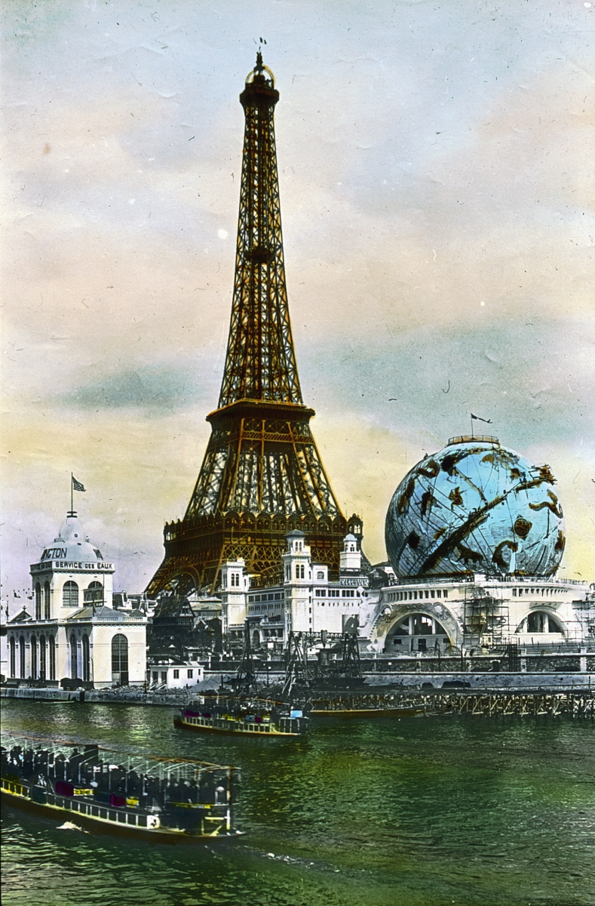

米其林指南的陰謀：為了多賣輪胎，居然搞出了美食聖經
共 44 幕分鏡 · 預估成片總長度：12分49秒 (769.5s) · 自動生成於 20261023_Michelin
🎞️ 各場景分鏡與語音審查
001_shot_1 · 大家好~我是白兔!你看過那些排隊
時長: 12.02s

002_shot_2 · 你有沒有想過這本統治全球美食界長
時長: 12.57s

003_shot_3 · 這個故事必須回到1900年的法國
🖼️ 畫中畫 PiP
時長: 13.94s

疊加參考圖 (PiP)：

004_shot_4 · 當時全法國四千萬人口中登記在冊的
時長: 14.58s

005_shot_5 · 當時的歐洲甚至連一條像樣的鋪裝柏
時長: 15.78s

006_shot_6 · 一旦汽車在荒郊野外拋錨或者爆胎
時長: 14.13s

007_shot_7 · 位在克萊蒙費朗的米其林橡膠工廠裡
時長: 20.95s

008_shot_8 · 面對這個幾乎要倒閉的致命困境
時長: 17.62s

009_shot_9 · 於是在1900年8月第一版厚達四
時長: 12.53s

010_shot_10 · 但這本最初的手冊裡根本找不到任何
時長: 10.77s

011_shot_11 · 同時標註了哪裡有藥房可以買到汽油
時長: 11.57s

012_shot_12 · 米其林兄弟心裡的算盤其實打得非常
時長: 15.99s

013_shot_13 · 然而這套免費贈送的策略很快就迎來
時長: 14.3s

014_shot_14 · 當他走進滿是油污的車間時眼前的一
時長: 19.26s

015_shot_15 · 他回到辦公室後立刻總結出一條殘酷
時長: 14.98s

016_shot_16 · 於是兄弟倆做出了一個震撼業界的冒
時長: 15.38s

017_shot_17 · 不僅如此他們還霸氣地砍掉了手冊裡
時長: 19.14s

018_shot_18 · 看到大眾竟然瘋狂搶購這本收費的小
時長: 13.17s

019_shot_19 · 1926年米其林首次在指南裡引進
時長: 12.41s

020_shot_20 · 為了維持所謂的絕對權威他們組建了
時長: 19.38s

021_shot_21 · 但你必須理解這套神級評分系統背後
時長: 22.03s

022_shot_22 · 官方手冊裡對一星餐廳的定義是同類
時長: 10.57s

023_shot_23 · 而二星餐廳的官方定義更加耐人尋味
時長: 16.86s

024_shot_24 · 至於美食界最高榮耀的三星餐廳官方
時長: 22.7s

025_shot_25 · 這樣來回折騰一趟客人吃飽了肚子而
時長: 24.99s

026_shot_26 · 但這並不僅僅是一場精妙絕倫的跨界
時長: 12.37s

027_shot_27 · 最震撼整個西方餐飲界的一幕發生在
時長: 18.5s

028_shot_28 · 在那個精緻餐飲的殘酷世界裡拿到三
時長: 20.78s

029_shot_29 · 2003年初先是競爭對手的指南調
時長: 23.5s

030_shot_30 · 整個法國社會為之震驚他的好友憤怒
時長: 20.42s

031_shot_31 · 憤怒的維拉拿出了所有當地的進貨單
時長: 25.59s

032_shot_32 · 隨著歐洲市場的利潤逐漸飽和這家輪
時長: 14.97s

033_shot_33 · 你可能完全想像不到很多國家或城市
時長: 26.99s

034_shot_34 · 而更荒唐的是西方那套傲慢的刀叉標
時長: 20.06s

035_shot_35 · 一家默默經營了半個世紀的平民油雞
時長: 11.97s

036_shot_36 · 瘋狂的觀光客會在幾天之內塞爆整條
時長: 27.59s

037_shot_37 · 回顧這場跨越了一百二十多年的世紀
時長: 24.91s

038_shot_38 · 但整件事最耐人尋味的諷刺其實藏在
時長: 19.95s

039_shot_39 · 這場世紀陽謀從一開始就坦坦蕩蕩地
時長: 19.14s

040_shot_40 · 世界上本該有千姿百態的美味但是從
時長: 11.53s

041_shot_41 · 我們在那些昂貴星級餐廳裡咀嚼吞嚥
時長: 10.68s

042_shot_42 · 從1900年泥濘道路上那兩千多輛
時長: 10.76s

043_shot_43 · 米其林用一本紅色指南向世界證明了
時長: 19.18s

044_shot_44 · 好了那麼螢幕前的你是否也曾親自造
時長: 33.04s